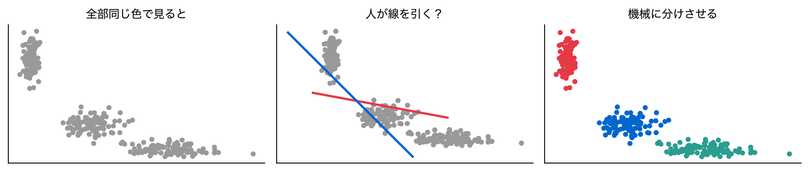
第12回 クラスタリング
似たものをどうグループ化するか——k-means・階層クラスタリング・距離尺度
場面：「お客さんを分けたい」
三百人の顧客がいます。「似た人どうしをまとめて施策を変えたい」と言われました。
線の引き方に根拠が要ります。 それを目的関数として書くのが今日の話です。
今回の問い
ECサイトに300人の顧客データがある（Recency・Frequency・Monetary）。
- ラベルなし——どの顧客が「優良」「中間」「離脱気味」か誰も教えてくれない
- 似た顧客を自動でグループにまとめてマーケティングに使いたい
→ 正解を知らずにデータからグループ構造を見つける＝クラスタリング
RFMデータとは
| 指標 | 意味 | 良い顧客 |
|---|---|---|
| Recency | 最終購入からの日数 | 小さい |
| Frequency | 購入回数 | 大きい |
| Monetary | 累計購入金額 | 大きい |
Recency Frequency Monetary
count 300.0 300.0 300.0
mean 53.6 10.4 261.9
std 39.0 7.6 179.7
min 2.1 0.5 49.7
25% 11.4 3.5 100.4
50% 50.8 7.8 202.2
75% 90.1 18.3 466.1
max 157.8 26.6 628.7データの四角形：行をグループに分ける
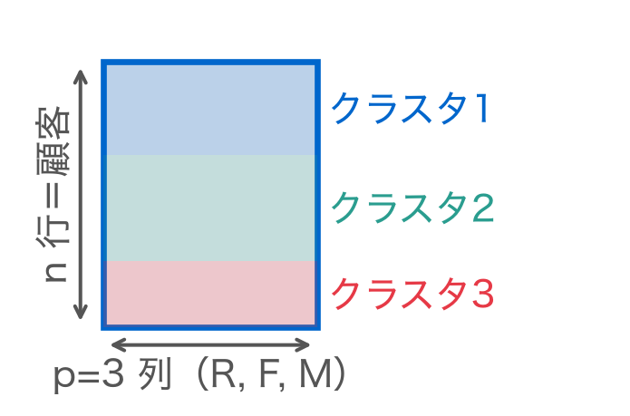
クラスタリング＝行の並べ替えとグループ分け。y 列は無い——グループはデータの近さから自分で見つける。
素朴に散布図で眺める
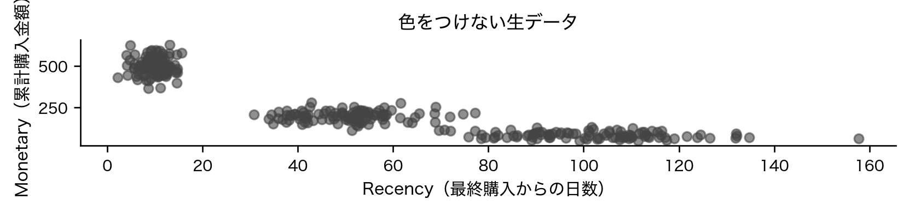
いくつに分けるかは目で見ても決められない。
素朴な限界：人間が線を引く
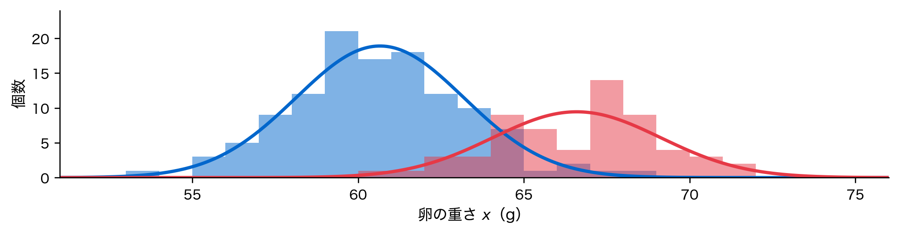
どこで切るかに根拠がありません。 かたまり方そのものから決めたい。
位置づけ：教師なし学習
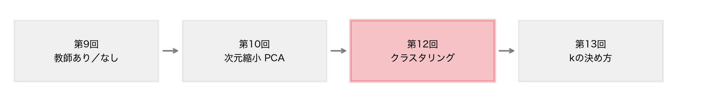
正解 y を使わず、データ X の構造だけから群を作ります。
行列で見る：k-means も分解
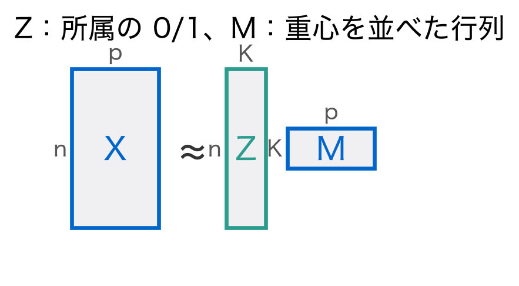
\min\; \|\mathbf{X}-\mathbf{Z}\mathbf{M}\|_F^2
PCA は「方向」で、k-means は「行のグループ」で圧縮する。
定義：k-meansの目的関数
\min_{C_1,\ldots,C_K}\; \sum_{k=1}^K \sum_{\mathbf{x}_i \in C_k} \|\mathbf{x}_i - \boldsymbol{\mu}_k\|^2
読み方：クラスタごとに中心からの距離の二乗を全員ぶん足し、それを全クラスタで合計する。
クラスタ内のばらつき（WCSS）を最小にする分け方を探す問題である。
定義：距離尺度
d_{\text{euclid}}(\mathbf{x},\mathbf{y})=\sqrt{\textstyle\sum_j (x_j-y_j)^2}\quad d_{\text{manhattan}}=\textstyle\sum_j |x_j-y_j|
d_{\text{cosine}}(\mathbf{x},\mathbf{y})=1-\frac{\mathbf{x}^\top\mathbf{y}}{\|\mathbf{x}\|\,\|\mathbf{y}\|}
- ユークリッド：直線距離。k-means の標準
- マンハッタン：碁盤目の距離。外れ値にやや頑健
- コサイン：向きだけを見る。大きさ無視（文書・購買ベクトル向き）
距離尺度の比較（数値例）
ユークリッド A-B=5.66 A-C=1.00 ／ コサイン A-B=0.00 A-C=0.29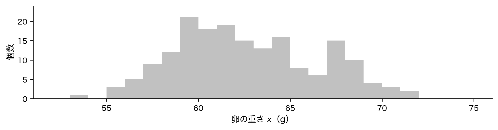
ユークリッドでは A は C に近い。コサインでは A-B が0。物差しで意味が変わる。
定義：階層クラスタリング
階層クラスタリングは併合の歴史を木で残す。

「クラスタ間の距離」の測り方＝連結法（linkage）が要になります。
定義：連結法（linkage）
クラスタ間の距離 D(A,B) の定義の違い。
| 連結法 | D(A,B) | 特徴 |
|---|---|---|
| 単連結 | 最近点対 | 鎖状を繋ぐ |
| 完全連結 | 最遠点対 | 球状を好む |
| Ward | WCSS増加 | k-means と同系 |
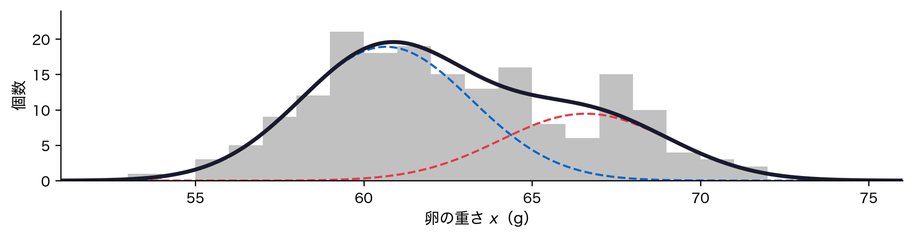
Ward法は k-means と同じ「クラスタ内平方和」の発想で併合します。
導出：Lloydアルゴリズム
割り当て：重心を固定し、各点を最も近い重心のクラスタへ c_i = \arg\min_{k}\; \|\mathbf{x}_i - \boldsymbol{\mu}_k\|^2
更新：割り当てを固定し、各重心をクラスタ平均に \boldsymbol{\mu}_k = \frac{1}{|C_k|}\sum_{\mathbf{x}_i \in C_k}\mathbf{x}_i
読み方：各クラスタの中心を、そのクラスタに属する点の平均で置き直す。
どちらも WCSS を増やさない。単調減少し必ず収束する。
導出：なぜ収束するか・局所解
深掘り：更新ステップが平均になる理由
\sum_{i\in C_k}\|\mathbf{x}_i-\boldsymbol{\mu}\|^2 の勾配（第1回の定義⑤⑥）は -2\sum_{i\in C_k}(\mathbf{x}_i-\boldsymbol{\mu})。0と置くと \boldsymbol{\mu}=\frac{1}{|C_k|}\sum \mathbf{x}_i。最小にする点＝平均。
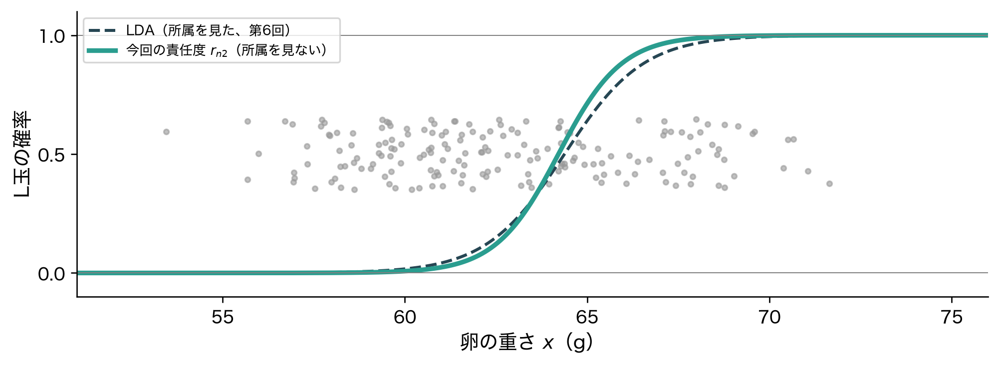
初期化の工夫が必須です。
手順：k-means++ と n_init
局所解対策の2本柱。
- k-means++：既存重心から遠い点を選んで分散配置
- n_init：複数回実行して最良を採用
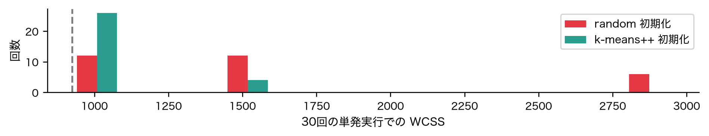
k-means++ のほうが良い解に集中しています。
手順：標準化が前提
RFM 各変数の標準偏差（生データ）:
Recency 39.0
Frequency 7.6
Monetary 179.7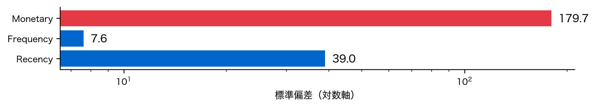
Monetary だけで距離が決まってしまいます。標準化が前提。
Pythonデモ① k-meansの当てはめ
収束までの反復回数 n_iter_ = 2
WCSS（inertia_） = 56.28
各クラスタのサイズ = [ 99 100 101]3クラスタはほぼ均等（99・100・101件）。WCSSは約56.3、わずか2反復で収束した。
Pythonデモ② 結果の散布図
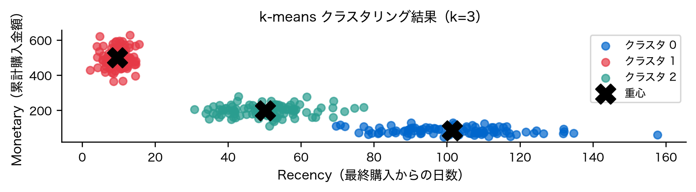
黒い×が各クラスタの重心。生データでは見えなかった3群がはっきり分離した。
Pythonデモ③ Lloyd反復の可視化
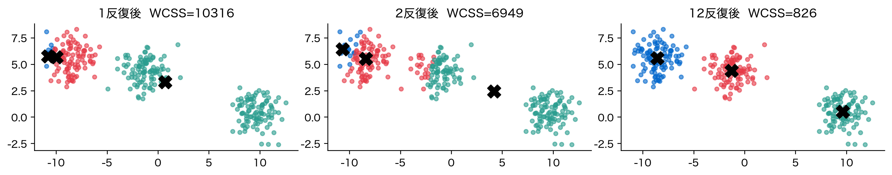
偏った初期重心（左下に密集）から出発しても、反復ごとに重心が移動しWCSSが激減。12反復後には3つの重心が各群の中心に落ち着く。
Pythonデモ④ デンドログラム
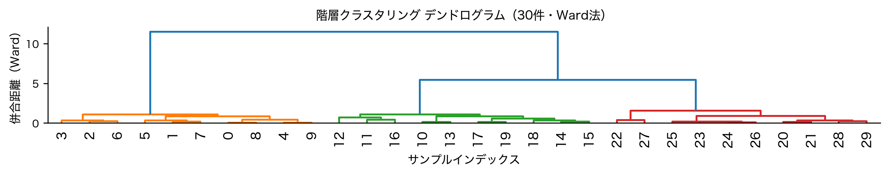
縦に長く伸びた所で切ると自然なクラスタ数が読める。高い位置の大きなジャンプが「3群」を示唆。
Pythonデモ⑤ クラスタプロファイル
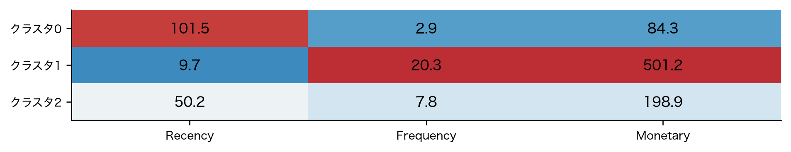
名前をつけて初めて施策に使えます。
- クラスタ2：中間層。各群の平均を見て初めて「名前」がつく。
解釈：デンドログラムの読み方
- 縦軸＝併合された高さ＝クラスタ間の距離
- 低い位置での併合＝よく似た点同士、高い位置＝遠い群同士
- 大きな縦のジャンプの直下で水平に切ると自然なk
- k-means と違い、kを後から選べる（木を切る高さ＝k）
計算量は O(n^2\log n)。数千件までなら手軽、大規模データは k-means が得意。
解釈：連結法で三日月を分ける
4つの連結法で、三日月形の2群を分ける。
single linkage ARI = 1.000
complete linkage ARI = 0.311
average linkage ARI = 0.597
ward linkage ARI = 0.597単連結（single）は ARI=1.0 で三日月を完璧に分離（隣の点を鎖状に繋ぐ）。完全連結は ARI≈0.31、平均連結・Wardは ARI≈0.60（丸い塊を好む）。
3群に名前が付き、曲がった群も追えた——ただ、これらの解釈には落とし穴があるかもしれない。
落とし穴①：球状クラスタの仮定
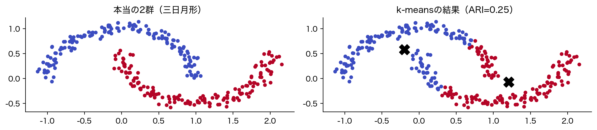
三日月形では k-means は失敗（ARI≈0.25）。重心で「真っ二つ」に切るため、曲がった群を捉えられない。
落とし穴①続き：球で切る構造
- 三日月・帯状・密度の異なる群では破綻（前スライドの ARI≈0.25）
- 距離の2乗和を最小化＝重心まわりの球で切る、という構造
対策
- 非球状なら密度ベース（DBSCAN）や混合分布（GMM）
- 単連結の階層クラスタリングは鎖状の群に強い
落とし穴②：スケール依存
標準化を忘れると、単位の大きい変数だけで群が決まる。
真の群は変数1（小さい範囲）で分かれているデータ
標準化なし ARI = 0.025 （変数2の大スケールに支配され失敗）
標準化あり ARI = 1.000 （完全に分離）標準化なしで ARI≈0.03、標準化で ARI=1.0。距離を使う手法では標準化が原則。
落とし穴③：kの恣意性と初期値依存
- kの恣意性：WCSS は k を増やせば必ず減る（次回の主題）
- 初期値依存：単発実行は悪い局所解に落ちうる
- 「正解」が無い：教師なしなので評価が難しい
クラスタリングは「発見」であって「予測」ではない。
発展①：DBSCAN（密度ベース）
- 半径 \varepsilon 以内に
min_samples個以上 → コアポイント、繋がりで群を成長 - 任意形状を発見（三日月もOK）／外れ値を自動でノイズ判定
- k不要（クラスタ数を指定しない）
弱点
eps と min_samples の設定が結果を大きく左右し、ドメイン知識が要る。密度が大きく異なる群が混在すると苦手。
発展②：GMMとクラスタ評価
- GMM（混合ガウス分布）：各クラスタを正規分布とみなし、所属を確率で表す
- クラスタ評価（次回）：エルボー法・シルエット係数・Gap統計で k を決め、結果の良さを測る
「どの手法・どのkが良いか」を定量化する話は第13回へ。
手法の使い分け一覧
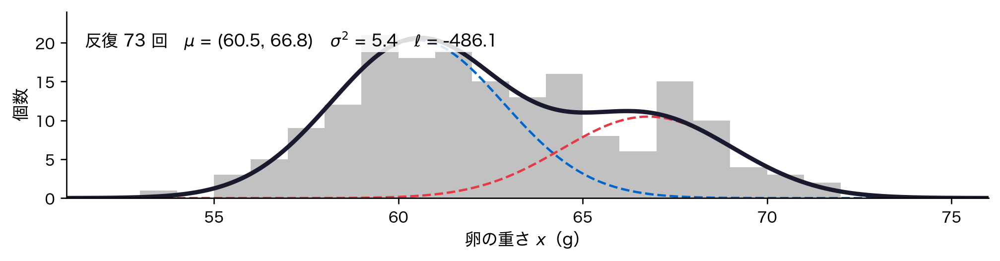
| 手法 | 形状 | k指定 | 規模 | 強み／注意 |
|---|---|---|---|---|
| k-means | 球状 | 必要 | 大OK | 高速。球状前提・要標準化 |
| 階層 | 連結法次第 | 不要 | 小〜中 | 木で可視化。O(n^2\log n) |
| DBSCAN | 任意 | 不要 | 中 | 外れ値検出。eps設定が難 |
| GMM | 楕円 | 必要 | 中 | 確率的割り当て。EMで推定 |
データの形状を散布図で確認 → 手法を選ぶ。万能の手法は無い。
まとめ
- クラスタリングは正解ラベルなしで群を発見する教師なし学習。k-meansはWCSS（クラスタ内平方和）を最小化
- 距離尺度（ユークリッド/マンハッタン/コサイン）と連結法（単/完全/平均/Ward）で結果が変わる
- 落とし穴：球状仮定・スケール依存・kの恣意性・初期値依存。必ず標準化、k-means++とn_initを使う
k-means は速いが球状前提。階層は柔軟だが重い。形に合った手法を選ぶ。
次回予告
第13回：クラスタリングの解析フロー
今回の積み残し——「k=3でいいの？」に答える回。
- エルボー法（WCSSの折れ曲がり）でkの目安を探す
- シルエット係数・Gap統計でクラスタの良さを定量化
- エルボーとシルエットが食い違う実例
- クラスタプロファイルをビジネス文脈で命名・活用
理論（今回）→ フロー（次回）で、クラスタリングを実務で回せるようにする。